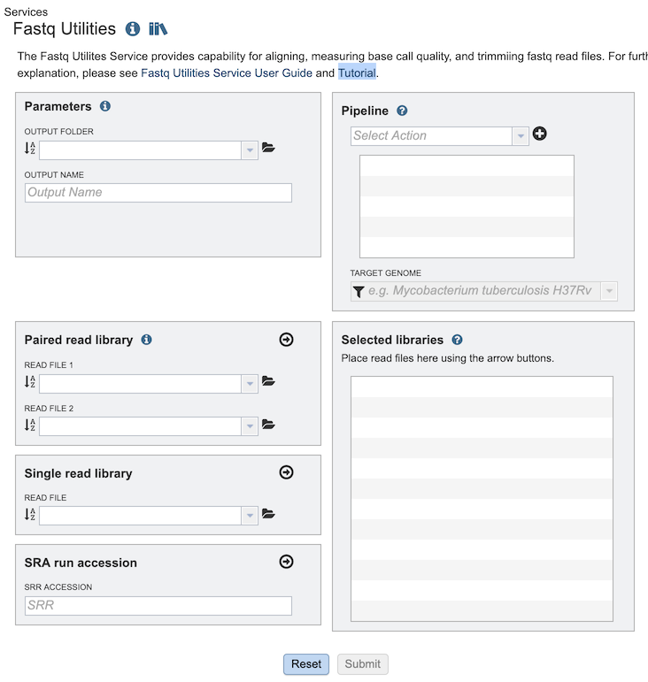
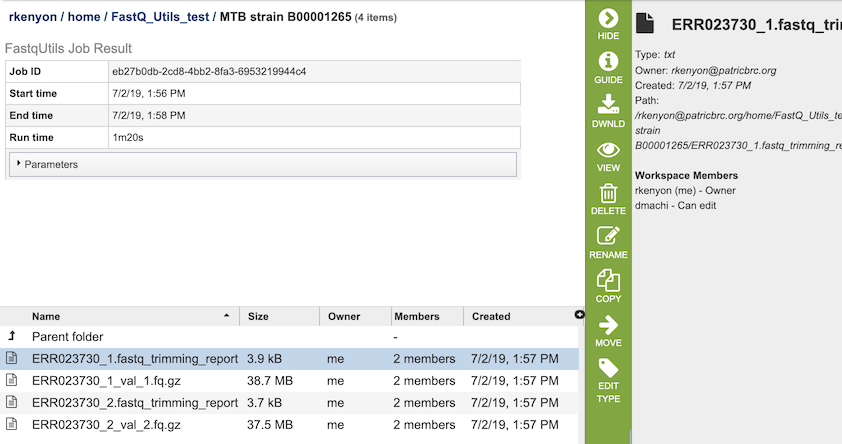
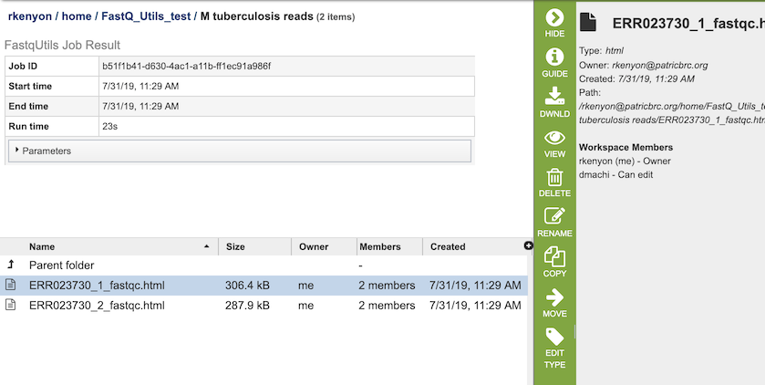
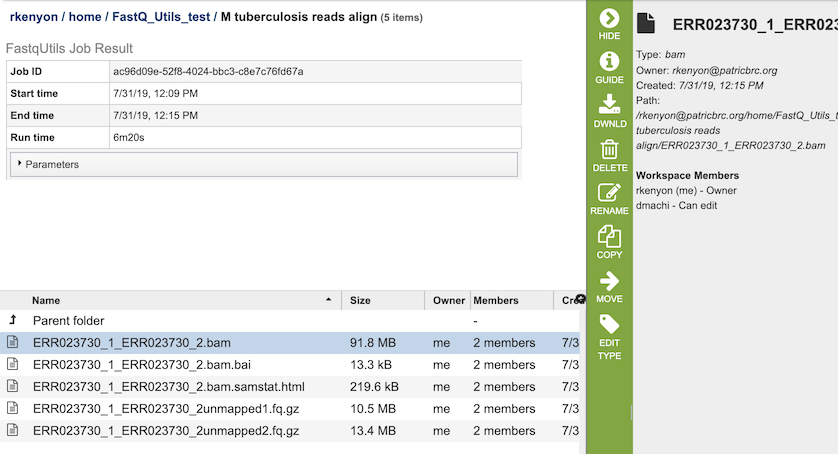

Fastq Utilities Service¶
Overview¶
The Fastq Utilities Service makes available common operations for FASTQ files from high throughput sequencing, including: generating FastQC reports of base call quality; aligning reads to genomes using Bowtie2 to generate BAM files, saving unmapped reads and generating SamStat reports of the amount and quality of alignments; and trimming of adapters and low quality sequences using TrimGalore and CutAdapt. The Fastq Utiliites app allows the user to define a pipeline of activities to be performed to designated FASTQ files. The three components (trim, fastqc and align) can be used independently, or in any combination.These actions happen in the order in which they are specified. In the case of trimming, the action will replace untrimmed read files with trimmed ones as the target for all subsequent actions. FASTQ reads (paired-or single-end, long or short, zipped or not), as well as Sequence Read Archive accession numbers are supported.
See also¶
Using the Fastq Utilities Service¶
The Fastq Utilities submenu option under the Services main menu (Genomics category) opens the Fastq Utilities input form (shown below). Note: You must be logged into BV-BRC to use this service.

Options¶

Parameters¶
Output Folder: The workspace folder where results will be placed.
Output Name: User-provided name used to uniquely identify results.
Pipeline¶
Select Action Dropdown box with options for specifying the steps for processing the reads. Each step can be added in any desired order:
Trim - Uses Trim Galore to find and remove adapters, leaving the relevant part of the read.
Fastqc - Uses FastQC to do quality checks on the raw sequence data.
Align - Aligns genomes using Bowtie2 to generate BAM files, saving unmapped reads, and generating SamStat reports of the amount and quality of alignments.
Paired Filter - Many downstream bioinformatics manipulations break the one-to-one correspondence between reads, and paired-end sequence files loose synchronicity, and contain either unordered sequences or sequences in one or other file without a mate. The Paired Filter will ensure the reads being evenly matched, so the FASTQ Utilities service now offers a pipeline that ensures that all paired-end reads have a match. The pipeline uses Fastq-Pair[4]. The code for Fastq-Pair is available here: https://github.com/linsalrob/fastq-pair.
Paired read library¶
Read File 1 & 2: Many paired read libraries are given as file pairs, with each file containing half of each read pair. Paired read files are expected to be sorted such that each read in a pair occurs in the same Nth position as its mate in their respective files. These files are specified as READ FILE 1 and READ FILE 2. For a given file pair, the selection of which file is READ 1 and which is READ 2 does not matter.
Single read library¶
Read File: The fastq file containing the reads
SRA run accession¶
Allows direct upload of read files from the NCBI Sequence Read Archive to the service. Entering the SRR accession number and clicking the arrow will add the file to the selected libraries box for use in the service.
Selected libraries¶
Read files placed here will be submitted to the service and contribute to a single analysis.
Output Results¶
Note: Extensive descriptions of the output files and options are provided in the Fastq Utilities Service Tutorial.
Trim¶

The Trim option generates several files that are deposited in the Private Workspace in the designated Output Folder. These include, for each read file,
xxx.fastq_trimming_report.txt - Report file with information on parameters used, adaptor sequences found, reads / base pairs processed, removed sequences, and statistics.
xxx_val_1.fq.gz - trimmed read files.
FastQC¶

The FastQC option generates several files that are deposited in the Private Workspace in the designated Output Folder. These include, for each read file,
xxx_fastqc.html - Web-friendly report file that provides information on the quality of the read file, with information on basic statistics, per base sequence quality, per tile sequence quality, per sequence quality scores, per base seqeunce content, per sequence GC content, and per base N content.
Align¶

The Align option generates several files that are deposited in the Private Workspace in the designated Output Folder. These include
xxx.bam - Compressed binary version of a SAM (Sequence Alignment/Map) file that is used to represent aligned sequences.
xxx.bam.bai - Index of the corresponding BAM file.
xxx.bam.samstat.html - Web-friendly SAMStat report for the alignment job with the MAPQ statistics.
xxx.unmapped#.fq.gz - File containing all the reads from each read file that did not map to aligned to the target genome.
Paired Filter¶
Paired end reads are usually provided as two fastq-format files, with each file representing one end of the read. Many commonly used downstream tools require that the sequence reads appear in each file in the same order and reads that do not have a pair in the corresponding file are placed in a separate file of singletons. Although most sequencing instruments capable of generating paired end reads produce files where each read has a corresponding mate, many downstream bioinformatics manipulations break the one-to-one correspondence between reads, and paired-end sequence files loose synchronicity, and contain either unordered sequences or sequences in one or other file without a mate. Assembly jobs often fail in the BV-BRC service due to the paired reads not being evenly matched, so the FASTQ Utilities service now offers a pipeline that ensures that all paired-end reads have a match. The pipeline uses Fastq-Pair[4]. The code for Fastq-Pair is available here: https://github.com/linsalrob/fastq-pair.
The Paired Filter option generates three files that are deposited in the Private Workspace in the designated Output Folder. These include:
xxx_1.paired.fq.gz and xxx_2.paired.fq.gz The fastq.paired.fq.gz file contains the paired read file and should be used for downstream analyses. It can be downloaded by clicking on the Download icon.
xxx_meta.txt Report file with information on parameters used, adaptor sequences found, reads / base pairs processed, removed sequences, and statistics.
References¶
Krueger, F., Trim Galore: a wrapper tool around Cutadapt and FastQC to consistently apply quality and adapter trimming to FastQ files, with some extra functionality for MspI-digested RRBS-type (Reduced Representation Bisufite-Seq) libraries. URL http://www.bioinformatics.babraham.ac.uk/projects/trim_galore/. (Date of access: 28/04/2016), 2012.
Martin, M., Cutadapt removes adapter sequences from high-throughput sequencing reads. EMBnet. journal, 2011. 17(1): p. 10-12.
Andrews, S., FastQC: a quality control tool for high throughput sequence data. 2010.
Langmead, B. and S.L. Salzberg, Fast gapped-read alignment with Bowtie 2. Nature methods, 2012. 9(4): p. 357.
Langmead, B., et al., Scaling read aligners to hundreds of threads on general-purpose processors. Bioinformatics, 2018. 35(3): p. 421-432.
Lassmann, T., Y. Hayashizaki, and C.O. Daub, SAMStat: monitoring biases in next generation sequencing data. Bioinformatics, 2010. 27(1): p. 130-131.
Bankevich, A., et al., SPAdes: a new genome assembly algorithm and its applications to single-cell sequencing. Journal of computational biology, 2012. 19(5): p. 455-477.